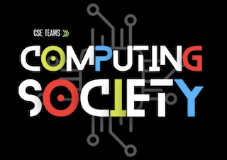

Computer Science
My name is Jared Garcia Orozco, I am a passionate Computer Science student at Brigham Young University-Idaho, set to graduate in April 2028. I collaborate with others to create efficient programs and solve the world's problems one line of code at a time.

Experience
IT Support Technician
- Provide Tier 2 technical support, troubleshooting software issues across various campus departments.
- Perform system imaging and re-imaging for university computers to ensure optimal performance and security.
- Manage surplus equipment, including decommissioning and preparing hardware for disposal or repurposing.
- Assist with software installations, updates, and configurations for faculty, staff, and student workstations.
- Document troubleshooting steps and resolutions to improve team efficiency and knowledge sharing.
- Collaborate with other IT teams to enhance system performance and user experience.
Market Researcher
- Conducted high-volume outbound calls (300+ daily) to gather survey data for political research, healthcare insurance, and private companies.
- Engaged respondents professionally to ensure accurate and unbiased data collection.
- Followed scripts while adapting to real-time conversations to maximize survey completion rates.
Warehouse Associate
- Loaded and unloaded trucks, ensuring accurate and efficient handling of products.
- Organized incoming shipments and maintained inventory accuracy.
- Created detailed reports on received products to track inventory levels and support logistics operations.
- Communicated effectively with team members to improve efficiency and resolve challenges in real time.
Education
Brigham Young University - Idaho
Graduating class: 2028
Computer Science student
GPA: 3.77
Skills
Back-end
Python
C#
Front-end
HTML5
CSS
Others
GitHub
TeamDynamix
Canva
Projects
EasyEnglish | Pygame
- Developed an interactive English-Spanish vocabulary matching game using Python and Pygame, enhancing language learning through an engaging GUI.
- Implemented CSV parsing to dynamically load word pairs, allowing easy scalability and customization of word lists.
- Utilized randomization techniques to shuffle options and ensure unique gameplay each session.
Volunteering
Full-Time Missionary, The Church of Jesus Christ of Latter-Day Saints
- Served for two years, helping people receive the restored gospel of Jesus Christ.
- Developed strong interpersonal and communication skills through daily interaction with diverse individuals and communities.
- Resolved conflicts and built relationships of trust with individuals from various backgrounds.

BYU-I Computing Society
Assisted in the development of websites for different computing societies and collaborated with 14 developers.
Ecology Project, Rioverde S.L.P., Mexico
- Worked with over 100 people to create a recreational park with green areas.
- Planted trees, grass, and built a greenhouse with natural resources.
- Educated elementary students on ecosystems and encouraged recycling, water conservation, and environmental stewardship.